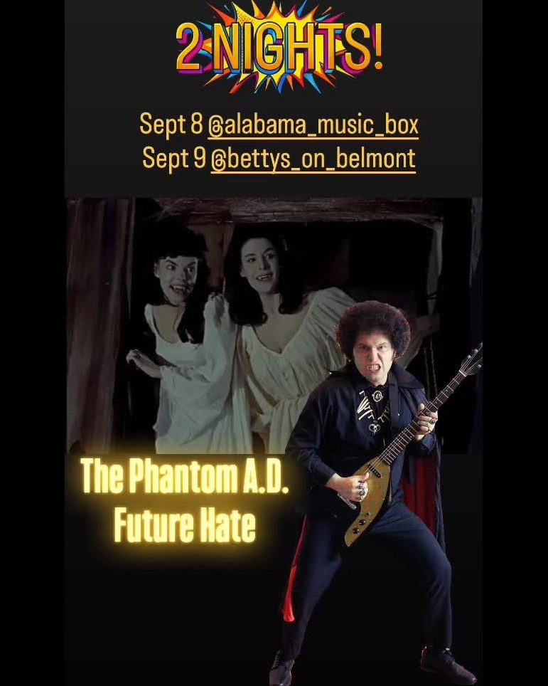
Wed Sep 9all ages
punk, metal & diy shows in pensacola, fl · fix your hearts or die

nothing on tonight rest up, or start something: submit a show. next up: Thu Sep 10 · Poets in the Punkhouse, Dennis Formento, Jamey Jones +2 at 309 Punk Project.

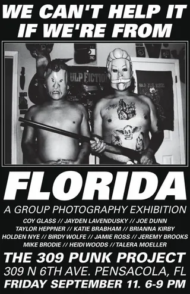


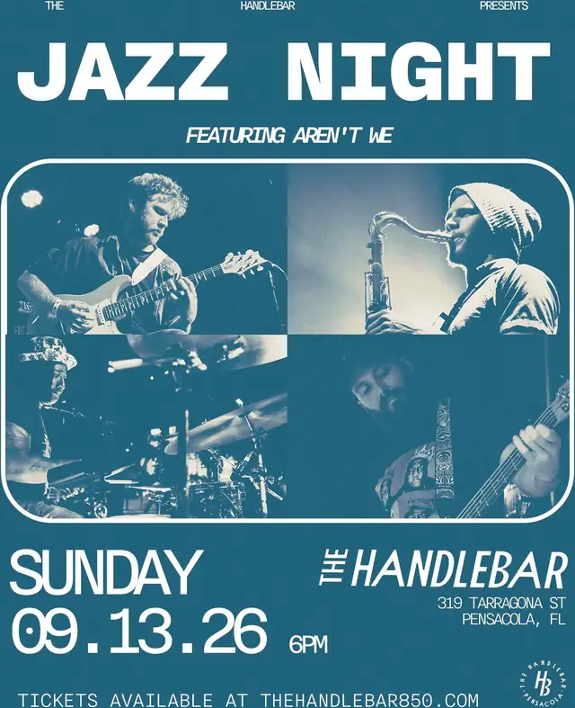


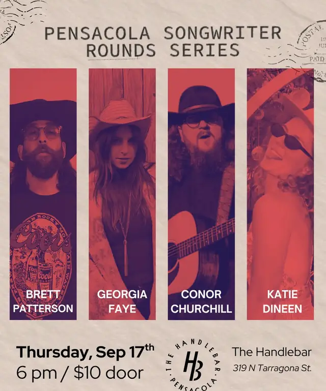


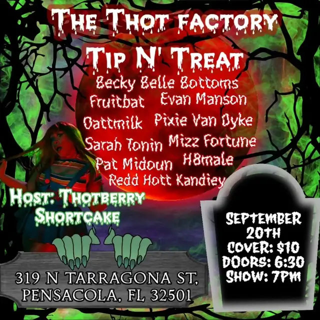
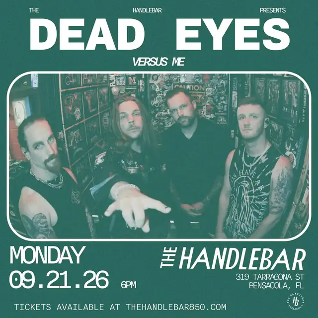


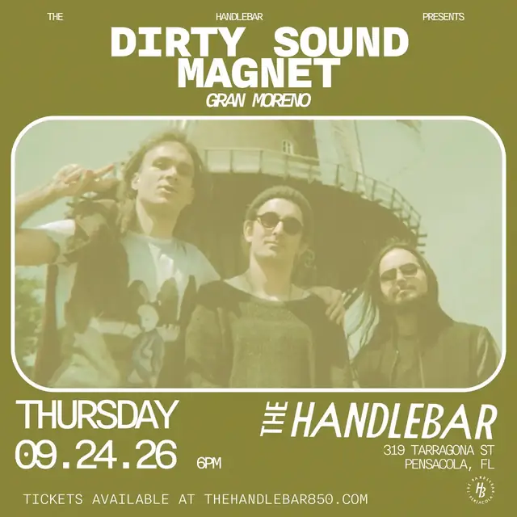
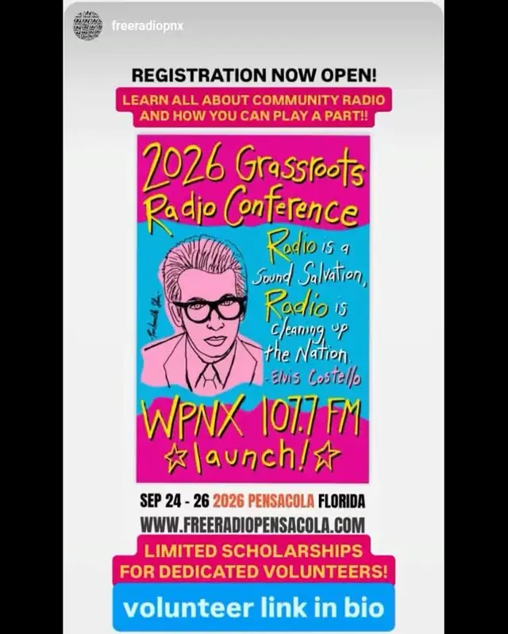
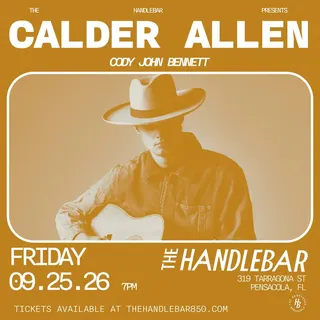


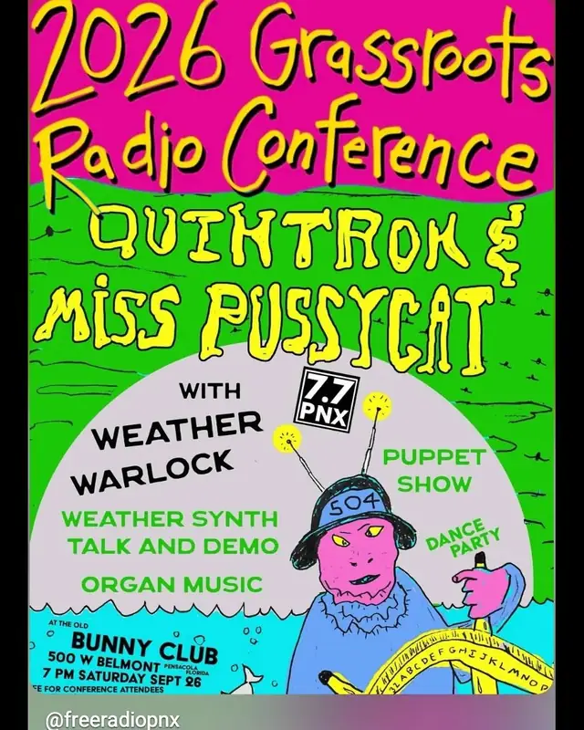


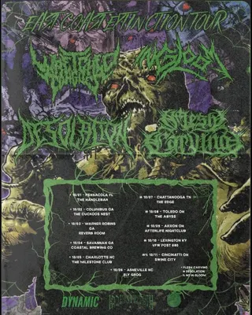
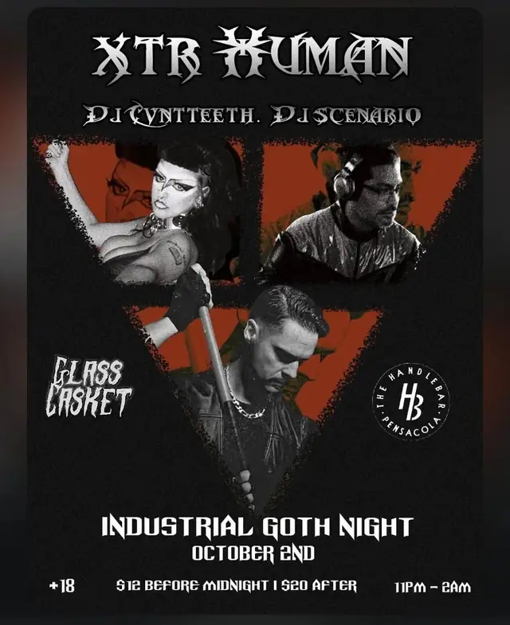


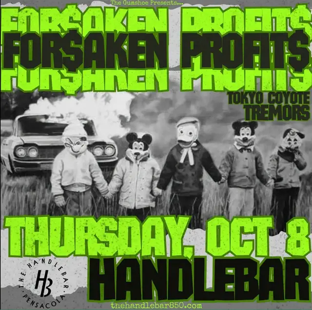


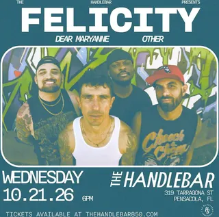


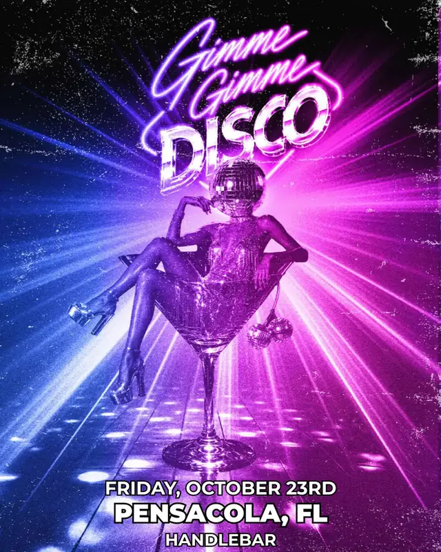
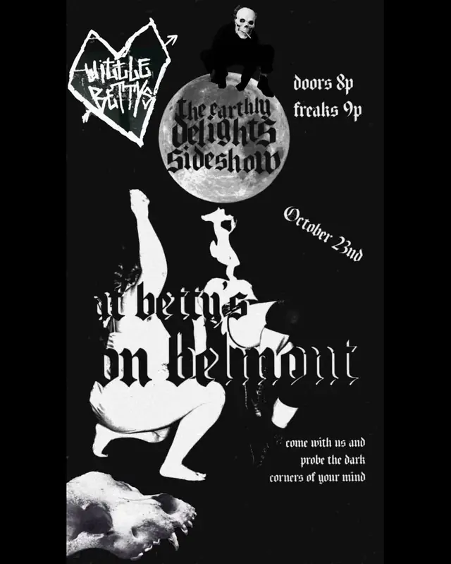


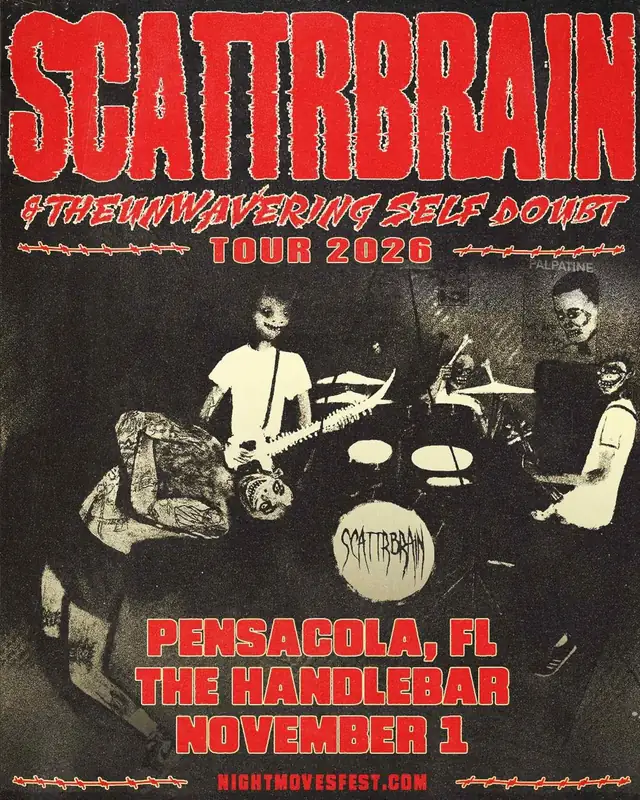


nobody by that name on the calendar, yet.
the calendar only holds what's coming up. the archive holds every show since 2002.
no shows on the calendar yet
the scene's between shows, or a flyer just hasn't been added yet. listings go up by hand, so they trail the flyers by a day or two. know of one that should be here?
| sun | mon | tue | wed | thu | fri | sat |
|---|---|---|---|---|---|---|
| 1Scattrbrain | 2 | 3 | 4 | 5 | 6 | 7 |
| 8 | 9 | 10 | 11 | 12 | 13 | 14Chrissy Chlapecka |
| 15 | 16 | 17 | 18 | 19 | 20 | 21 |
| 22The Revivalists, Hunter Metts | 23 | 24 | 25 | 26 | 27 | 28 |
nothing on the books for january yet. submit a show.